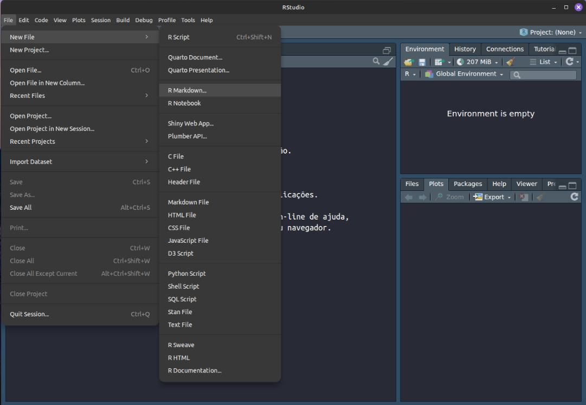
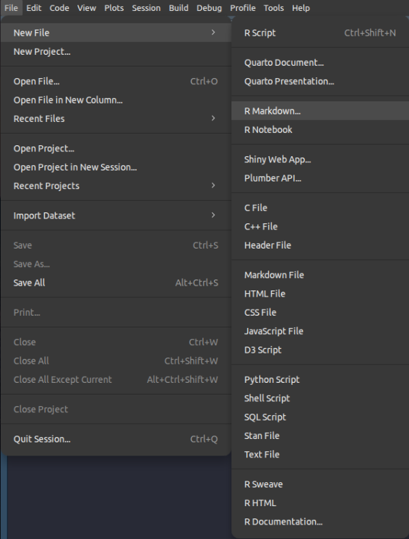
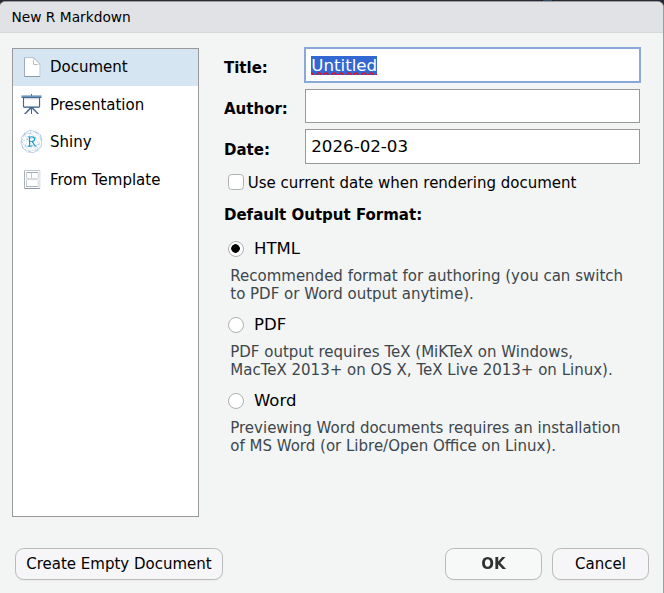
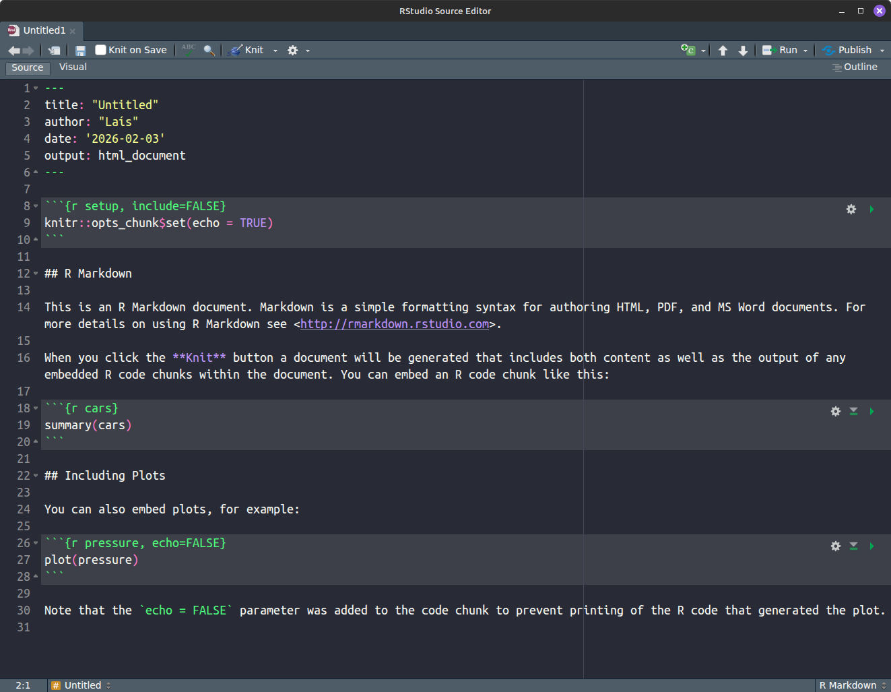
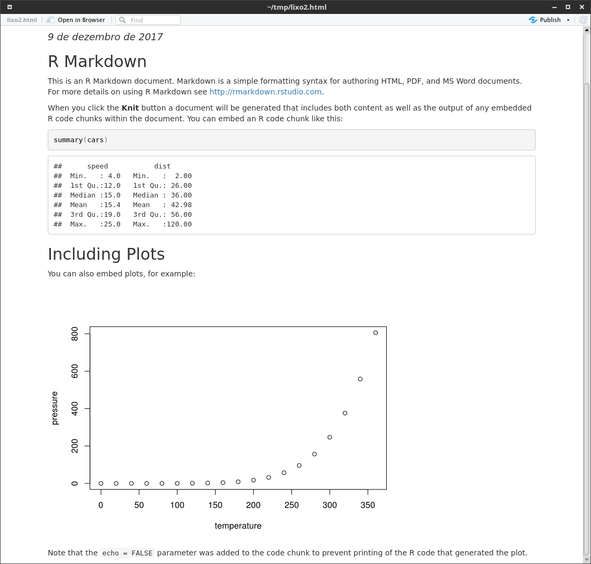
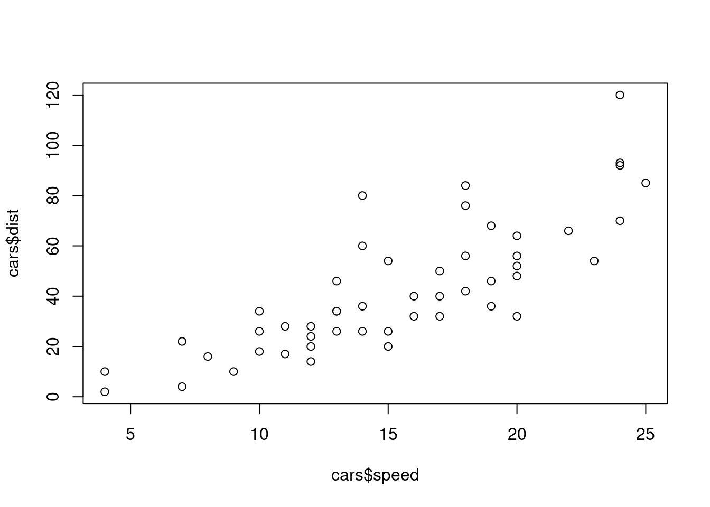
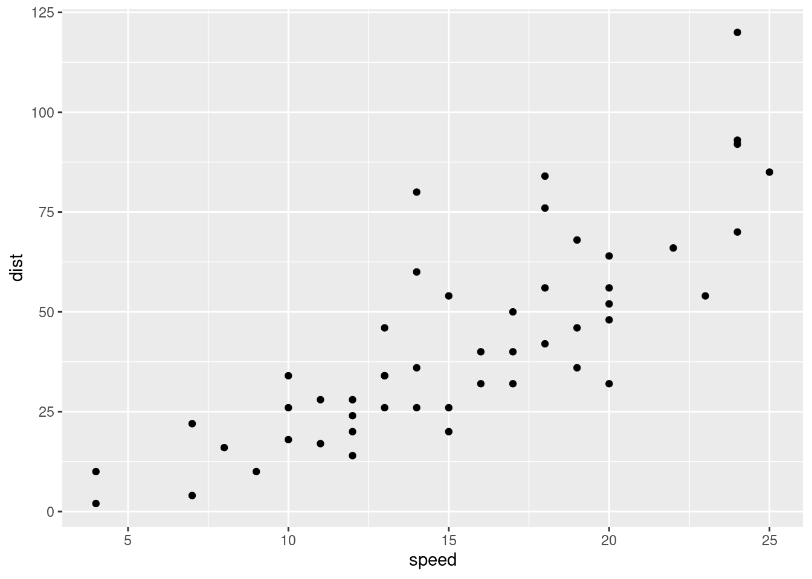
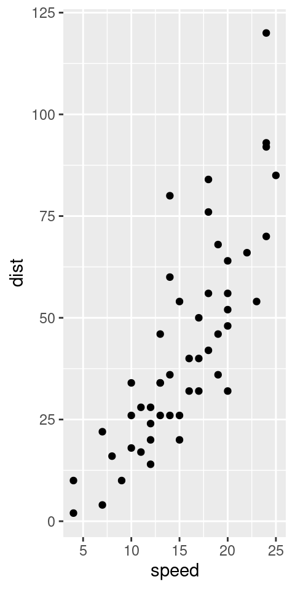
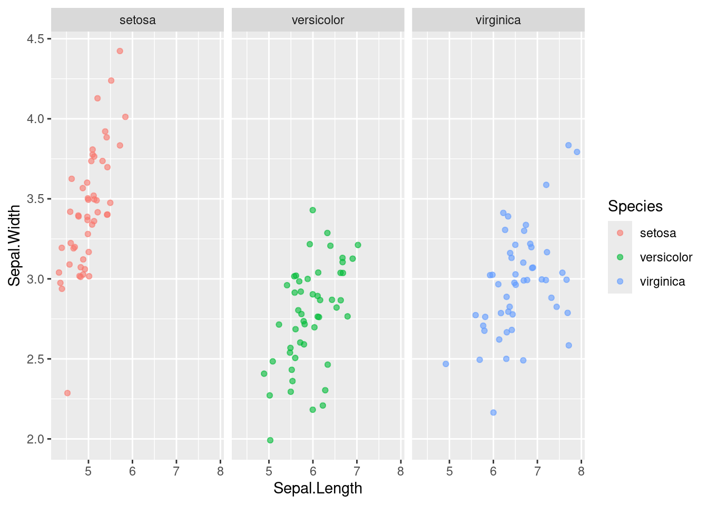

Markdown é uma linguagem simples de marcação (markup language). Ela foi influenciada por diversas linguagens principalmente pelo HTML. desenvolvido em 2004 por John Gruber e Aaron Swartz.
O Markdown permite que seus elementos sejam definidos usando marcações de texto, sem a necessidade de tags com outras linguagens. Seu arquivo fonte é em formato texto e mesmo com os marcadores de formatação o texto continua legível.
Veja a frase abaixo
O R pode ser baixado do site do Mirror do CRAN localizado na FIOCRUZ
em HTML :
<p>O <b>R</b> pode ser baixado do <i> site</i> do <ahref="http://cran.fiocruz.br "& g t; Mirror do CRAN, target="_blank"> localizado na <em>Fiocruz</em></p>
em Markdown teríamos :
O **R** pode ser baixado do *site* do [Mirror do CRAN](cran.fiocruz.br) localizado na **FIOCRUZ**
Como vemos no pequeno exemplo acima o markdown é simples, usa símbolos para fazer formatações como negrito, Itálico , links etc…, como você pode deduzir da linha acima, texto entre um * estará em negrito , já entre apenas um * estará em itálico .
O markdown é uma ferramenta muito prática para o dia a dia e seu conteúdo pode ser convertido facilmente em diversos formatos , HTML, PDF , EPUB (ebook) e ate mesmo MS WORD DOC.
3.1.0.2 1.1 o que é Rmarkdown
O Rmarkdown é uma extensão do markdown que adiciona ao R um ambiente integrado para
Realização de analises ,
Documentação de scripts
Geração de relatórios
Essas características fazem do RMarkdown uma ferramenta única possibilitando uma expansão e inovação na maneira que usamos o R. As características apontadas acima tornam o R uma ferramenta de excelência , facilitado a produção de análises, mantende e documentando de uma forma mais amigável os scripts em R e, por fim, gerando relatórios complexos integrando facilmente , textos gráficos e tabelas e gerando documentos em qualidade de editoração
usando o Rmarkdown podemos facilmente formatar
textos em negrito e itálico
listas
cabeçalhos (títulos, sub-títulos etc…)
hyperlinks
gráficos e tabelas
equações matemáticas
bibliografia e citações
etc…
em resumo tudo que voce necessita para um relatório técnico, trabalho de fim de curso ou até mesmo um artigo científico
3.1.0.3 1.2 usando Rmarkdown no Rstudio
Apesar de não ser obrigatório fazer o rmarkdown no Rstudio, ele nos facilita muito a tarefa de criar, editar e gerar o formato de saída.
Antes de entrarmos nos detalhes do markdown vamos ilustrar o processo do Rstudio para que fique mais claro como é o processo.
Após iniciar o Rstudio clique na opção file em seguida new file e, por fim, no menu lateral a opção Rmarkdown

so para ficar mais claro

Apos selecionar Rmarkdown o seguinte menu vai aparecer

Informe o Título do documento , o nome do Autor e o formato de saída.
ATENÇÃO Nesse curso vamos lidar somente com HTML , como se pode ver é necessária a instalação de programas adicionais para implementar a saída em PDF
Apos clicar em OK o rstudio cria uma aba no editor com um código de exemplo

Para gerar o documento devemos clicar no pequeno botão onde está escrito knit
caso ainda não tenha salvo o arquivo o rstudio vai solicitar um nome, de um nome para o arquivo (a extensão dele será _*.Rmd_ )
Em seguida você vera no console do R o arquivo sendo transformado para o formato html e exibido em uma janela de apresentação do próprio rstudio

A janela de apresentação é um ambiente de visualizar o html, mas se quiser clilcar no botão open in Browser a página será exibida no navegador default do seu sistema operacional.
Vamos a segui conhecer um pouco mais da sintaxe do Rmarkdown
3.1.0.4 1.4 formatação básica do Rmarkdown
Vamos apresentar os elementos basicos de formatação do Rmarkdown, note que muitas vezes existem mais de uma maneira de especificar um formato.
Importante notar que o símbolo # deve estar na primeira coluna, nenhum espaço ou tabulação antes dele
Para criar listas use * ou -
* item 1- item 2* item 3 - sub item 3.1 - sub item 3.2- item 4
Atenção aos sub itens , que devem ter uma tabulação ou espaços antes do símbolo * ou -
Para listas numeradas
1. um 4. dois 3. tres + sub 3a + sub 3b2. quatro
Repare que mesmo estando fora de ordem, o Rmarkdown vai ordenar corretamente os itens
Linha separadora
Em muitas ocasiões pode ser útil ter uma linha separando pedaços do texto. em rmarkdown basta fazer uma linha com 3 asteriscos para se obter:
***
Bloco de citações (block quotation)
> “essentially, all models are wrong,> but some are useful”> George P. Box
Vamos testar esses elementos que vimos acima. Crie no rstudio um novo documento do tipo Rmarkdown, apague totalmente o conteúdo e cole o conteúdo abaixo. em seguida crie o arquivo de saída (neste caso html) clicando no botão knitr
Quebrando parágrafos e forçando quebra de linhas
Para inserir uma quebra entre parágrafos inclua uma linha totalmente em branco
Para forçar uma quebra de linha, ponha dois espaços
em branco no final da linha.
Quebrando parágrafos e forçando quebra de linhasPara inserir uma quebra entre parágrafos inclua uma linha totalmente em brancopara forçar uma quebra de linha, ponha dois espaços em branco no final da linha
Observe que a primeira no incio do arquivo gerado pelo rstudio temos
---
title: “Exemplo de formatos em Rmarkdown”
author: ""
date: ""
output: html_document
---
Esse início é denominado cabeçalho YAML , onde se setam opções que serão passadas a um programa chamado pandoc que é o responsável por transformar o Rmarkdown no formato desejado!
---title: “Exemplo de formatos em Rmarkdown”author: ""date: ""output: html_document---Os tipos de cabeçalho são :# cabeçalho 1## cabeçalho 2### cabeçalho 3#### cabeçalho 4##### cabeçalho 5###### cabeçalho 6***#### Formatação: Texto Normal*Itálico***Negrito**#### Listas:* item 1- item 2* item 3- sub item 3.1- sub item 3.2- item 4#### Listas Numeradas1. um 4. dois 3. três + sub 3a + sub 3b2. quatro Ronald Fisher em 1938 disse:>"To call in the statistician after the experiment is done may be no more than asking him to perform a post-mortem examination: he may be able to say what the experiment died of."
Observe o documento gerado, agora experimente, por exemplo, colocar um espaço antes de uma # , ou remover a linha entre “Ronald Fisher em 1938 disse” e o resto da citação.
3.1.0.5 1.5 Links e Imagens em Rmarkdown
3.1.0.5.1 1.5.1 Links
Criar um link é bem simples, vamos criar um link apontando para o site da Fiocruz
Acesse o site da [Fiocruz](http://www.fiocruz.br)
Neste caso teremos somente o link que esta entre [] e o endereço da URL não vai aparecer. já no formato abaixo o link sera exibido e estará ativo .
Acesse o site da Fiocruz em (http://www.fiocruz.br)
Pode-se combinar o link a vários outros elementos, uma lista por exemplo.
Lista de Sites* [ENSP](http://www.ensp.fiocruz.br)* [PROCC](http://www.procc.fiocruz.br)* [INI](www.ini.fiocruz.br)
Uma vez mais precisamos estar atentos ao espaço. Não pode haver espaçamento entre as chaves e os parêntesis.
Tente incluir um link no nome de Ronald Fisher apontando para https://pt.wikipedia.org/wiki/Ronald_Fisher
3.1.0.5.2 1.5.2 Imagens
Para imagens temos um processo semelhante. para incluir por exemplo o logo do PROCC buscando a imagem através da rede.

PROCC
Note que o texto entre os colchetes diferente dos links não aparece, então na prática
Como vimos vários formatos gráficos podem ser usados
jpeg, jpg
png
tiff
gif, gif animados
svg (formato vetorial)
etc…
Mas note que o tamanho depende do tamanho original da imagem! Assim para ajustar o tamanho deve-se fazer o download da imagem e alterar localmente o tamanho. Outras linguagens de marcação como por exemplo HTML ou LaTex possuim opções para se ajustar o tamanho.

3.1.0.6 1.6 Tabelas
Vamos falar brevemente sobre tabelas básicas em Rmarkdown. Antes de mais nada, aqui estamos falando de tabelas implementadas em markdown e não as tabelas geradas por um comando no R.
Veja o código abaixo
| Nome | Sexo | Idade | Grupo || :----| :--: | ----:| -----|| João | M | 34 | A || Maria | F | 29 | A || Ana | F | 32 | B |
ele vai gerar a seguinte tabela:
Nome
Sexo
Idade
Grupo
João
M
34
A
Maria
F
29
A
Ana
F
32
B
Repare que a coluna Nome temos na segunda linha :—- , o que faz com que a coluna seja alinhada à esquerda. Já a coluna sexo :—: indicando que estará centralizada , Idade está —-: significando alinhada à direita e por fim a coluna Grupo que estão na opção default que é alinhada à esquerda.
Alguns elementos podem ser combinados dentro da tabela, como negrito, itálico, links e imagens!
Esse seria o código para reproduzir essa tabela. No entanto lembre-se que vai precisar das imagens e de configurar o caminho para refletir a localização das imagens na sua máquina. Outro fato a ser notado é que não ha a necessidade de estar tudo alinhado, já que temos como separador o símbolo |.
A formatações das equações existentes no Rmarkdown seguem o padrão LaTeX. Existem basicamente duas maneiras de se escrever uma equação no Rmarkdown , no formato chamado inline e na forma de blocos.
Por exemplo podemos escrever \(\frac{2}{3}\) dos Brasileiros tem sobre peso ou obesidade! ou ainda o parâmetro obtido foi \(\hat{\lambda}=1.02\) e ainda algo como \(\sqrt{4}=2\) , as letras gregas \(\alpha, \beta, \gamma...\) , símbolos especiais como $a $ , operadores matemáticos e lógicos como \(x \ge 15\) ou ainda \(a_i \ge 0~~~\forall i\)
veja o fonte do paragrafo acima:
Por exemplo podemos escrever $\frac{2}{3}$ dos Brasileiros tem sobre peso ou obesidade! ou ainda o parâmetro obtido foi $\hat{\lambda}=1.02$ e ainda algo como $\sqrt{4}=2$ , as letras gregas $\alpha, \beta, \gamma...$ , símbolos especiais como $a \pm $ , operadores matemáticos e lógicos como $x \ge 15$ ou ainda $a_i \ge 0~~~\forall i$
O modo inline permite que misturemos fórmulas, letras gregas, símbolos junto ao texto. Para isso usamos o $ para abrir e fecha o trecho com o formato Matemático.
Já no modo bloco devemos escrever uma ou mais equações dentro de um bloco iniciado por $$ e fechado pelo mesmo comando. por exemplo
A equação de segundo grau é dada por:$$x=\frac{-b \pm\sqrt{bˆ2-4ac}}{2a}$$
A equação de segundo grau é dada por: \[
x=\frac{-b \pm \sqrt{bˆ2-4ac}}{2a}
\]
O formato Para compreender algumas das possibilidades desse formato veja Aqui e Aqui para intruções sobre como usar equações no formato Rmarkdown e Aqui para instruções gerais do formato matemático usado na linguagem LaTeX.
3.1.0.8 2.0 Executando comandos R
Ate aqui vimos como lidar com o formato do Rmarkdown mas ainda não vimos como integrar com o R.
Aqui também existem duas maneiras de utilizar o R, o modo inline e o modo de bloco de código R, que também vamos chamar de chunk .
o modo inline é simples , podemos, por exemplo, escrever a seguinte linha em qualquer pedaço.
104 graus fahrenheit são 40 graus Celsius
104 graus fahrenheit são 40 graus Celsius
Repare que o acento grave ` para criar o código inline, também é necessário usar o r minúsculo após o primeiro acento grave.
Tente rodar o rmarkdown abaixo
---title:"R inline"author:""date:""output: html_document---Hoje é Rio de Janeiro, 03 de março de 2026Estou usando o R version 4.5.2 (2025-10-31) no sistema operacional linux-gnuPosso afirmar que $\pi \approx$3.1415927
O uso do comando inline do R e deve ser restrito a pequenos cálculos e formatação de strings, pois essa maneira não permite comandos mais complexos e nem gráficos.
3.1.0.9 2.1 O bloco R (chunk) e algumas opções
Antes de falarmos sobre os blocos há algumas considerações importantes a serem feitas:
O espaço de trabalho workspace da sua sessão de R não é compartilhado com o rmarkdown , ou seja, todos os objetos , pacotes que estão carregados não serão passados ao rmarkdown
Nenhum objeto será exportado por default, a não ser que seja explicitamente salvo
O arquivo produzido como saída pelo rmarkdown, quer seja uma página HTML, um PDF ou um DOC no formato Word pode ser salvo.
3.1.0.9.1 2.1.1 O Bloco R
Os blocos de comandos em R (chunk) usados no rmarkdown são usados para fazer o processamento em R, produzir resultados, gráficos ou simplesmente para ilustrar o código quando se prepara uma aula ou se quer deixar o código visível em um relatório pro exemplo.
um exemplo de bloco em rmarkdown , note que a repetição de 3 acentos graves seguidos de {r} marcam o início do bloco e informam que aquele bloco contem código em R. Para fechar o bloco são necessários 3 acentos graves. O código
---title: "Bloco de código em R"author: ""date: ""output: html_document---## Exemplo de bloco de comandos em **R** ::: {.cell}```{.r .cell-code}summary(mtcars)
mpg cyl disp hp
Min. :10.40 Min. :4.000 Min. : 71.1 Min. : 52.0
1st Qu.:15.43 1st Qu.:4.000 1st Qu.:120.8 1st Qu.: 96.5
Median :19.20 Median :6.000 Median :196.3 Median :123.0
Mean :20.09 Mean :6.188 Mean :230.7 Mean :146.7
3rd Qu.:22.80 3rd Qu.:8.000 3rd Qu.:326.0 3rd Qu.:180.0
Max. :33.90 Max. :8.000 Max. :472.0 Max. :335.0
drat wt qsec vs
Min. :2.760 Min. :1.513 Min. :14.50 Min. :0.0000
1st Qu.:3.080 1st Qu.:2.581 1st Qu.:16.89 1st Qu.:0.0000
Median :3.695 Median :3.325 Median :17.71 Median :0.0000
Mean :3.597 Mean :3.217 Mean :17.85 Mean :0.4375
3rd Qu.:3.920 3rd Qu.:3.610 3rd Qu.:18.90 3rd Qu.:1.0000
Max. :4.930 Max. :5.424 Max. :22.90 Max. :1.0000
am gear carb
Min. :0.0000 Min. :3.000 Min. :1.000
1st Qu.:0.0000 1st Qu.:3.000 1st Qu.:2.000
Median :0.0000 Median :4.000 Median :2.000
Mean :0.4062 Mean :3.688 Mean :2.812
3rd Qu.:1.0000 3rd Qu.:4.000 3rd Qu.:4.000
Max. :1.0000 Max. :5.000 Max. :8.000
:::
Ao executar o comando acima teremos em nossa janela de saída a seguinte figura. de agora em diante vou **omitir** a parte relativa ao YAML.

Note que temos duas regiões,
* A) com um fundo cinza claro, onde existe o eco do comando **R** contido no bloco
* B) a saída da função *summary* que estava no bloco precedida por ## em cada linha
E se quisermos incluir mais um bloco? Poderíamos digitar todos os comandos para criar o bloco, no entanto o editor do *rstudio* oferece um atalho para isso.

No canto superior direito do editor do *rstudio* clique em *insert* e em seguida na opção **R**. esse comando vai criar um bloco vazio na posição do cursor.
Insira dentro desse bloco o seguinte comando:
colMeans(mtcars)
de maneira que tenha um código mais ou menos como esse
```markdown
## Exemplo de bloco de comandos em **R**
### Estatística sumária de todas as variáveis do data.frame mtcars
::: {.cell}
```{.r .cell-code}
summary(mtcars)
mpg cyl disp hp
Min. :10.40 Min. :4.000 Min. : 71.1 Min. : 52.0
1st Qu.:15.43 1st Qu.:4.000 1st Qu.:120.8 1st Qu.: 96.5
Median :19.20 Median :6.000 Median :196.3 Median :123.0
Mean :20.09 Mean :6.188 Mean :230.7 Mean :146.7
3rd Qu.:22.80 3rd Qu.:8.000 3rd Qu.:326.0 3rd Qu.:180.0
Max. :33.90 Max. :8.000 Max. :472.0 Max. :335.0
drat wt qsec vs
Min. :2.760 Min. :1.513 Min. :14.50 Min. :0.0000
1st Qu.:3.080 1st Qu.:2.581 1st Qu.:16.89 1st Qu.:0.0000
Median :3.695 Median :3.325 Median :17.71 Median :0.0000
Mean :3.597 Mean :3.217 Mean :17.85 Mean :0.4375
3rd Qu.:3.920 3rd Qu.:3.610 3rd Qu.:18.90 3rd Qu.:1.0000
Max. :4.930 Max. :5.424 Max. :22.90 Max. :1.0000
am gear carb
Min. :0.0000 Min. :3.000 Min. :1.000
1st Qu.:0.0000 1st Qu.:3.000 1st Qu.:2.000
Median :0.0000 Median :4.000 Median :2.000
Mean :0.4062 Mean :3.688 Mean :2.812
3rd Qu.:1.0000 3rd Qu.:4.000 3rd Qu.:4.000
Max. :1.0000 Max. :5.000 Max. :8.000
:::
3.1.1 Somente as media das variáveis
colMeans(mtcars)
mpg cyl disp hp drat wt qsec
20.090625 6.187500 230.721875 146.687500 3.596563 3.217250 17.848750
vs am gear carb
0.437500 0.406250 3.687500 2.812500
Execute o *rmarkdown* e observe como fica o resultado.
Apague e tente agora o seguinte código.
```markdown
### Somente as media das variáveis
::: {.cell}
```{.r .cell-code}
media <- colMeans(mtcars)
:::
3.1.2 Desvio padrão
desvio <-apply(mtcars, 2, sd)
o que aconteceu? Porque? Como fazer que os resultados obtidos sejam exibidos?
```markdown
### Calcula a media e DP das variáveis
::: {.cell}
```{.r .cell-code}
media <- colMeans(mtcars)
desvio <- apply(mtcars, 2, sd)
:::
Vamos fazer mais um exemplo, desta vez
```R
::: {.cell}
```{.r .cell-code}
library(dplyr)
Anexando pacote: 'dplyr'
Os seguintes objetos são mascarados por 'package:stats':
filter, lag
Os seguintes objetos são mascarados por 'package:base':
intersect, setdiff, setequal, union
Note que ao carregarmos um pacote ou qualquer outra mensagem de aviso tambem será ecoada para a saída. Podemos silenciar a saída da função **library()** usando as seguintes opções.
##### 2.1.2 Opções do bloco R
Cada bloco **R** pode ter um nome, isso ajudar quando temos muitos blocos e ajuda também na detecção de erros pois o nome do bloco. O nome é opcional mas nunca deve se repetir.
```R
---
title: "Modelo GLM"
author: ""
date: ""
output:
html_document
---
::: {.cell}
```{.r .cell-code}
library(MASS)
Anexando pacote: 'MASS'
O seguinte objeto é mascarado por 'package:dplyr':
select
Call:
glm(formula = low ~ ., family = binomial, data = bwt)
Coefficients:
Estimate Std. Error z value Pr(>|z|)
(Intercept) 0.82302 1.24471 0.661 0.50848
age -0.03723 0.03870 -0.962 0.33602
lwt -0.01565 0.00708 -2.211 0.02705 *
raceblack 1.19241 0.53597 2.225 0.02609 *
raceother 0.74069 0.46174 1.604 0.10869
smokeTRUE 0.75553 0.42502 1.778 0.07546 .
ptdTRUE 1.34376 0.48062 2.796 0.00518 **
htTRUE 1.91317 0.72074 2.654 0.00794 **
uiTRUE 0.68019 0.46434 1.465 0.14296
ftv1 -0.43638 0.47939 -0.910 0.36268
ftv2+ 0.17901 0.45638 0.392 0.69488
---
Signif. codes: 0 '***' 0.001 '**' 0.01 '*' 0.05 '.' 0.1 ' ' 1
(Dispersion parameter for binomial family taken to be 1)
Null deviance: 234.67 on 188 degrees of freedom
Residual deviance: 195.48 on 178 degrees of freedom
AIC: 217.48
Number of Fisher Scoring iterations: 4
Repare que cada bloco tem um nome único.
Suponha que no exemplo acima queremos suprimir a exibição dos blocos setup e transformação , bastaria introduzir a opção *echo=FALSE* no início do bloco.
(Dispersion parameter for binomial family taken to be 1)
Null deviance: 234.67 on 188 degrees of freedom
Residual deviance: 195.48 on 178 degrees of freedom AIC: 217.48
Number of Fisher Scoring iterations: 4
:::
:::
faça isso para os dois blocos e rode novamente. A opção *echo* portanto controla se o comando **R** dentro do bloco sera exibido ou não.
Experimente alterar novamente esse bloco e adicionar a opção *eval=FALSE* e volte *echo* para *TRUE*
A opção eval controla se o comando será executado (evalueted) ou não , mas repare que ele foi exibido mas não executado! Então veja que esse parâmetro é util para exibir o código sem de fato executa-lo.
agora vá no block setup e coloque a opção include=FALSE.
essa opção faz com que o bloco não apareça, que não haja output nenhum. a diferenção para a opção *echo* e que nesta o código não é mostrado mas o *output* é
existem muitas outras opções , para saber mais veja no [pacote *knitr*](https://yihui.name/knitr/) na sessão [Code Evaluation](https://yihui.name/knitr/options/#code-evaluation) e saiba mais sobre essas e outras opções disponiveis.
algumas mas mais frequentes estão abaixo.
| opção | default | descrição |
| ------- | :------: | :--------------------------------------- |
| eval | TRUE | executa o código **R** dentro do bloco |
| echo | TRUE | exibe o código **R** contido no bloco e também seu *output* |
| warning | TRUE | exibe mensagens de aviso ocorridas no bloco |
| error | FALSE | exibe mensagens de erro ocorridas no bloco |
| message | TRUE | exibe mensagens ocorridas durante a execução |
| tidy | FALSE | reorganiza o texto no output |
| result | "markup" | formato do output "markup", "asis", "hold", or "hide" |
| cache | FALSE | cria um cache para armazenar os dados<br /> (aumenta velocidade em multiplas execuções) |
| comment | "##" | caracteres exibidos antes de cada linha de *output*<br />para desligar comment=NA ou commnet="" |
| include | TRUE | inclui ou não o bloco no output final do documento, quando FALSE nada sera exibido mas o código será executado assim mesmo. |
| | | |
#### 2.2 Incluído gráficos do R
Até aqui vimos formatos de *output* de texto, vamos ver como fazer gráficos e conhecer as principais opções para controlar sua exibição.
```R
::: {.cell}
```{.r .cell-code}
# Modo base
plot(cars$speed,cars$dist)

:::
# Usando ggplot2library(ggplot2) #poderia estar em no bloco setup por exemploggplot(cars, aes(speed, dist)) +geom_point()

Vamos altera um pouco o gráfico usando as opções do bloco. As principais opções são as seguintes:
| opção | default | descrição |
| ---------- | :---------: | ---------------------------------------- |
| fig.width | 7 polegadas | largura da figura |
| fig.height | 5 polegadas | altura da figura |
| fig.retina | 2 | qualidade da figura, 1 = baixa, 2 = alta |
| out.width | NA | largura que pode ser especificado em valor o em %<br /> por exemplo out.width = "20%" |
| out.height | NA | idem a descrição acima aplicada a altura. |
| dpi | 96 | pontos por polegada, alta= 300 DPI |
| | | |
Vamos especificar a largura em apenas 2.5 " (polegadas)
```R
::: {.cell}
```{.r .cell-code}
# Usando ggplot2
library(ggplot2) #poderia estar em no bloco setup por exemplo
ggplot(cars, aes(speed, dist)) + geom_point()

:::
Vamos controlar a altura e largura
```R
::: {.cell}
```{.r .cell-code}
ggplot(iris, aes(x = Sepal.Length, y = Sepal.Width,color=Species)) +
geom_jitter(alpha = 0.6) +
facet_grid(. ~ Species)

:::
Especificando o percentual da largura
```R
::: {.cell}
```{.r .cell-code}
# tamanho de 20% do original
ggplot(cars, aes(speed, dist)) + geom_point()
:::
Com as opções out.width e out.height é possível controlar qualquer tipo de output gráfico,
Lembram-se da figura grande do logo do R?
Esses são algumas das opções mais usadas nos output gráficos, no entanto existem outros parâmetros gráficos, como, por exemplo, margens que também devem ser levados em consideração.
#### 2.3 formatando tabelas
Para melhorar o aspecto na apresentação de tabelas, existem varios pacotes que nos ajudar, vamos ver dois deles.
O primeiro é o pacote *knitr* que já deve estar instalado pois junto com o *rmarkdown* é um dos principais pacotes para a implementação do *markdown* no **R**.
Vamos usar a função *kable* que vai formatar a tabela um *html* , para que ela possa ser renderizadas vamos usar a opção result="asis" .
```R
Table: Tabela usando a Knitr
| | mpg| cyl| disp| hp| drat| wt| qsec| vs| am| gear| carb|
|:-----------------|----:|---:|----:|---:|----:|-----:|-----:|--:|--:|----:|----:|
|Mazda RX4 | 21.0| 6| 160| 110| 3.90| 2.620| 16.46| 0| 1| 4| 4|
|Mazda RX4 Wag | 21.0| 6| 160| 110| 3.90| 2.875| 17.02| 0| 1| 4| 4|
|Datsun 710 | 22.8| 4| 108| 93| 3.85| 2.320| 18.61| 1| 1| 4| 1|
|Hornet 4 Drive | 21.4| 6| 258| 110| 3.08| 3.215| 19.44| 1| 0| 3| 1|
|Hornet Sportabout | 18.7| 8| 360| 175| 3.15| 3.440| 17.02| 0| 0| 3| 2|
Um outro pacote que permite formatar tabelas e até mesmo as saídas de modelos é o pacote pander. Caso esse pacote não esteja instalado é necessário instalar ou pelo menu do rstudio ou
O rmarkdown possui muitos recursos e extensões que podem ser utilizadas. Um dos pontos importantes e que por vezes você precisa de antemão saber que tipo de documento quer produzir, se HTML , PDF, etc… pois em alguns comandos avançados podem ser específicos para cada documento.
É possível injetar comandos HTML caso deseje ter esse tipo de documento ou ainda comandos em LaTeX caso quera um PDF.
Existe até um pacote chamado bookdown que permite editar livros, que podem ser hospedados na nuvem. Existem alguns livros já disponíveis nesse formato, vários deles sobre Data Science explore esses livros em (https://bookdown.org/).